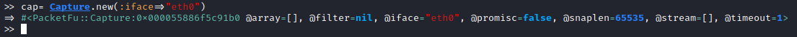
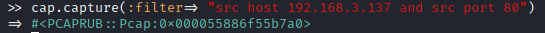
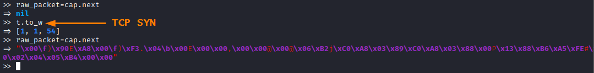
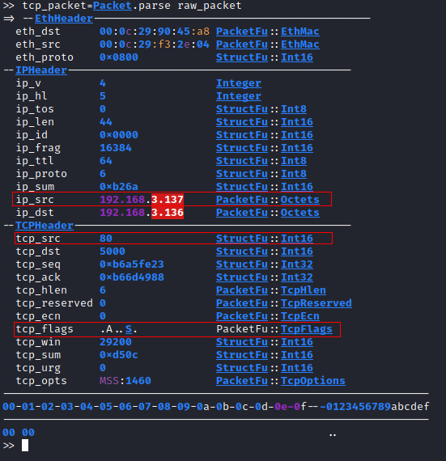

Capture/sniff packet received
Documentation:
https://rubydoc.org/github/todb/packetfu/PacketFu/CaptureDuring
Forge UDP
Packet and
Forge TCP
packet we have seen(with wireshark) that our machine has actually received a response from the target,
but the kernel if we do not specify does not process
it.
How to Capture/sniff the packets:1. create a Capture object
2.
specify the interface where it will capture the traffic (eth0 is the default NIC).
3. we can also specify a filter as a capture
parameter in order to capture only specific packets that comes from our target
example: capture packets that comes from host 192.168.3.137 and has source port
80
4. To check if our
interface received a packet which matches the filter, we can use the next method.
◇ nil → means that there is
not one matching
◇ Otherwise → the packet is returned
 *Note: with
t.to_w we have sent the
forged packet seen in
Forge TCP
packe View/Parse the Raw Packet received:
tcp_packet=Packet.parse raw_packet
As we can see in the interpreter, the packet received is the desired SYN+ACK (flag A and S) packet
coming from port:80 and host:192.168.3.137
